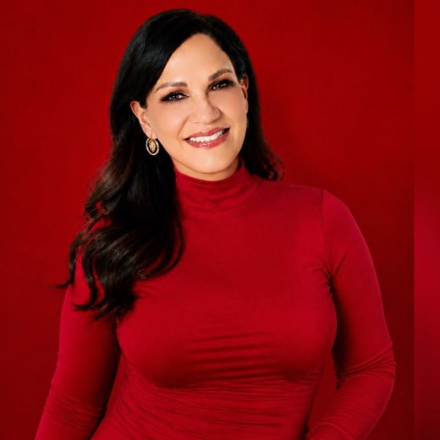

¿Tuvo un accidente de auto en Utah? Encuentre a su abogado aquí.
Cuéntenos qué pasó y le conectamos con un abogado independiente en Utah. Somos un servicio de referidos, no un bufete de abogados.
Usted se recupera.
Nosotros hacemos la presentación.
El primer paso para encontrar al abogado indicado
Después de un accidente automovilístico es normal no saber a quién llamar. Nosotros escuchamos su situación y le presentamos a un abogado independiente que atiende casos de accidentes de auto en Utah. Usted decide si lo contrata.
Cómo funciona
Tres pasos sencillos, sin compromiso.
Presente su situación
Llene el formulario con lo básico de su accidente.
Le conectamos
Le presentamos a un abogado independiente en Utah adecuado para su caso.
Hable con el abogado
El abogado revisa su caso y le explica sus opciones.
Sobre Best Legal Counsel
Un servicio de referidos con un solo propósito: ayudarle a llegar al abogado indicado con menos estrés.
Orientación clara, sin presión
Ayudamos a las personas lesionadas en accidentes de auto en Utah a encontrar al abogado independiente indicado. Le escuchamos, le explicamos cómo funciona el referido y hacemos la presentación, sin presionarle a tomar ninguna decisión.
Ayuda al alcance de todos en Utah
Imaginamos un Utah donde cualquier persona que haya tenido un accidente pueda conectarse rápidamente, en inglés o en español, y elegir su propio siguiente paso con confianza.
Lo que nos guía
- Compasión. Cada llamada importa, y la tratamos así.
- Honestidad. Somos claros sobre lo que hacemos y lo que no hacemos.
- Su decisión. Contratar a un abogado siempre depende de usted.
- Atención bilingüe. Ayuda en español y en inglés.
- Integridad. Hacemos lo correcto, siempre.
Nuestro equipo
Las personas detrás de nuestro servicio de referidos. No somos abogados; le conectamos con ellos.

Hayser Barrera
Especialista en orientación al cliente
Hayser es especialista en orientación al cliente y guía a las personas después de un accidente con cuidado y respeto.
Jackie Barrera
Especialista en orientación al cliente
Jackie es especialista en orientación al cliente y suele ser la primera voz que usted escucha. Ofrece una orientación tranquila y paciente después de un accidente.
Janet Rodriguez
Gestora de casos de clientes
Janet es gestora de casos de clientes y acompaña a cada persona desde la primera conversación hasta la presentación con un abogado. Mantiene el asunto organizado y da seguimiento para que usted sepa qué sigue.
Escríbanos por WhatsApp
Elija un mensaje para iniciar la conversación. Se abrirá WhatsApp con el texto listo para enviar.
WhatsApp: (385) 490-6607
Tuve un accidente de auto
"Hola, tuve un accidente de auto en Utah y me gustaría que me ayuden a encontrar un abogado."
Abrir en WhatsAppEscribo por un familiar
"Hola, le escribo por un familiar que se lesionó en un accidente de auto en Utah."
Abrir en WhatsAppTengo una pregunta
"Hola, tengo una pregunta sobre cómo funciona su servicio de referidos."
Abrir en WhatsAppPreguntas frecuentes
Sobre Best Legal Counsel
¿Son ustedes un bufete de abogados?
No. Best Legal Counsel es un servicio de referidos. Le conectamos con abogados independientes, y ellos brindan la ayuda legal.
¿Estoy obligado a contratar al abogado?
No. Contratar a un abogado siempre es su decisión.
¿Puedo llamar por un familiar?
Sí. Los familiares pueden comunicarse en nombre de un ser querido.
¿Puedo recibir ayuda en inglés?
Sí. Visite nuestra página en inglés para comunicarse en inglés.
¿En qué partes de Utah ofrecen servicio?
Ayudamos a personas en todo Utah.
Sobre su caso
¿Tengo un caso válido de lesiones personales?
Es posible que tenga un caso si resultó herido porque otra persona fue descuidada. Una reclamación por lesiones personales por lo general debe demostrar tres cosas:
- La otra persona tenía el deber de actuar de manera segura, por ejemplo al respetar las leyes de tránsito.
- No lo hizo.
- Su error causó directamente sus lesiones y sus pérdidas económicas.
Best Legal Counsel es un servicio de referidos, no un bufete de abogados. Un abogado puede revisar los hechos de su situación y explicarle qué puede aplicar.
¿Debería presentar un reclamo si no siento dolor de inmediato?
Después de un accidente, su cuerpo puede entrar en estado de shock y liberar adrenalina, lo que puede ocultar el dolor por completo. Las lesiones graves, como el esguince cervical (whiplash), las conmociones cerebrales o las hemorragias internas, a menudo no duelen hasta días después. Vaya a un médico de inmediato para proteger su salud. La atención médica oportuna también crea registros que pueden importar más adelante. Un abogado puede aconsejarle sobre si corresponde presentar un reclamo y cuándo hacerlo.
Costos y valor del caso
¿Cuánto vale mi caso de lesiones personales?
No existe una fórmula exacta. El valor de un caso suele basarse en dos cosas:
- Gastos documentados, como facturas médicas, recibos de farmacia, salarios perdidos y facturas de reparación del vehículo.
- El impacto personal, incluido el dolor físico, el estrés emocional y la forma en que la lesión cambió su vida diaria.
Un abogado puede revisar sus registros y explicarle qué puede aplicar en su situación.
¿Cuánto cuesta?
Best Legal Counsel es un servicio de referidos, no un bufete de abogados. El abogado al que le presentemos le explicará sus propios honorarios antes de que usted decida si lo contrata.
El proceso legal y los plazos
¿Cuánto tiempo tengo para presentar una demanda?
En Utah, muchas demandas por lesiones personales derivadas de un accidente de auto deben presentarse dentro de los cuatro años siguientes al accidente. Algunas situaciones tienen un plazo más corto. Si vence el plazo que aplica a su caso, puede perder el derecho a recuperar una compensación. Un abogado puede decirle qué plazo aplica a su situación.
¿Tendré que ir a la corte?
Muchos casos de lesiones personales se resuelven sin un juicio. Un juicio puede ser necesario si la compañía de seguros no ofrece una resolución justa. El abogado de su caso se encargaría de ese proceso.
¿Cuánto tiempo tardará en resolverse mi caso?
A menudo depende de su recuperación médica. Los casos más simples, con culpabilidad clara y lesiones menos graves, pueden resolverse en unos cuantos meses. Los casos con lesiones graves y atención médica más larga pueden tardar un año o más. Por lo general no es conveniente liquidar el caso antes de conocer el panorama médico completo. Un abogado puede aconsejarle sobre los plazos.
Después de un accidente
¿Qué debo hacer inmediatamente después de un accidente?
- Busque atención médica de inmediato.
- Llame a la policía y pida que presenten un informe oficial del accidente.
- Tome fotos y videos de la escena, los autos, cualquier peligro y sus lesiones.
- Intercambie datos de contacto y de seguro con todos los involucrados.
¿Qué debo decir si me llama la compañía de seguros del otro conductor?
Usted no tiene que dar una declaración grabada a la aseguradora del otro conductor, y no debe admitir la culpa. Los ajustadores pueden sonar amables, pero su trabajo es proteger a su compañía. Puede decirles que está trabajando con Best Legal Counsel y compartir nuestro número de WhatsApp, (385) 490-6607, y luego terminar la llamada.
El seguro de auto en Utah
¿Cómo funciona el sistema "sin culpa" (no-fault) de Utah?
Utah exige que su propio seguro de auto incluya protección contra lesiones personales, conocida como PIP. Esa cobertura por lo general paga al menos los primeros $3,000 de sus facturas médicas razonables después de un choque, sin importar quién lo haya causado. La ley de Utah por lo general permite una reclamación contra el conductor culpable por dolor y sufrimiento cuando los gastos médicos superan los $3,000, o cuando aplican ciertas lesiones graves, como un hueso roto, una discapacidad permanente o la muerte. Un abogado puede explicarle cómo aplican estas reglas a su caso.
¿Subirá el precio de mi seguro si abro un reclamo y no tuve la culpa?
La ley de Utah (Código de Utah 31A-19a-212) no permite que un asegurador de automóvil personal aumente su prima por un reclamo de vehículo motorizado en el que usted, o alguien que usaba su auto con permiso, no tuvo la culpa. Esa protección aplica cuando se emite o se renueva una póliza. Su tarifa aún puede cambiar por otras razones, como un aumento general de la compañía. Si cree que su prima subió por un choque que no fue su culpa, pregunte a su aseguradora el motivo.
Documentos que debe reunir
¿Qué documentos debo reunir?
Si los tiene, estos elementos pueden ayudarnos a nosotros y al abogado a revisar su situación:
- Registros del accidente y de las autoridades
- El informe policial o el formulario de intercambio de información que le entregó el oficial en la escena
- El nombre, número de placa y departamento del oficial si no obtuvo una copia completa del informe
- Cualquier multa o citación de tránsito emitida al otro conductor en la escena
- Fotos y evidencia de la escena
- Fotos o videos de la escena, incluida la posición de los vehículos, marcas de frenado, señales de tránsito, clima o peligros en la carretera
- Fotos de cerca y amplias de los daños a su vehículo, el interior o su propiedad personal
- Fotos claras de sus lesiones desde el día del accidente a lo largo de su recuperación
- Seguro e identificación
- La página de declaración de su seguro de auto o un desglose que muestre su cobertura, incluida la protección contra lesiones personales (PIP)
- Los datos de contacto y de seguro del otro conductor
- Los datos de su tarjeta de seguro médico, que pueden ayudar con las facturas médicas mientras avanza el reclamo
- Registros médicos e impacto financiero
- Registros de emergencias o cuidado urgente, como documentos de alta o instrucciones de su primera visita
- Facturas médicas y recibos de hospitales, terapeutas físicos, quiroprácticos o farmacias
- Comprobante de pérdida de ingresos, como talones de pago recientes o registros de calendario de las horas que perdió por visitas médicas o días de recuperación
La información de esta sección es solo para fines informativos generales. No constituye asesoramiento legal ni médico. Best Legal Counsel es un servicio de referidos, no un bufete de abogados, y no ofrece asesoría legal. Hable con un abogado con licencia sobre los requisitos específicos de su caso.
Cuéntenos qué pasó
Teléfono y correo electrónico próximamente.